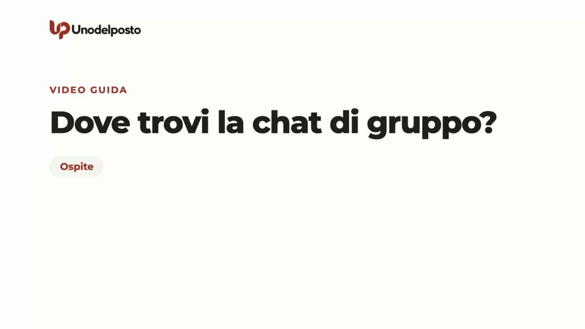
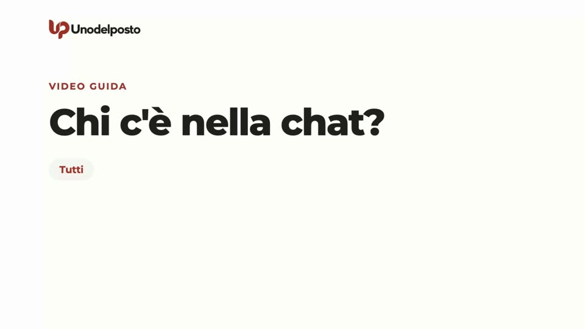
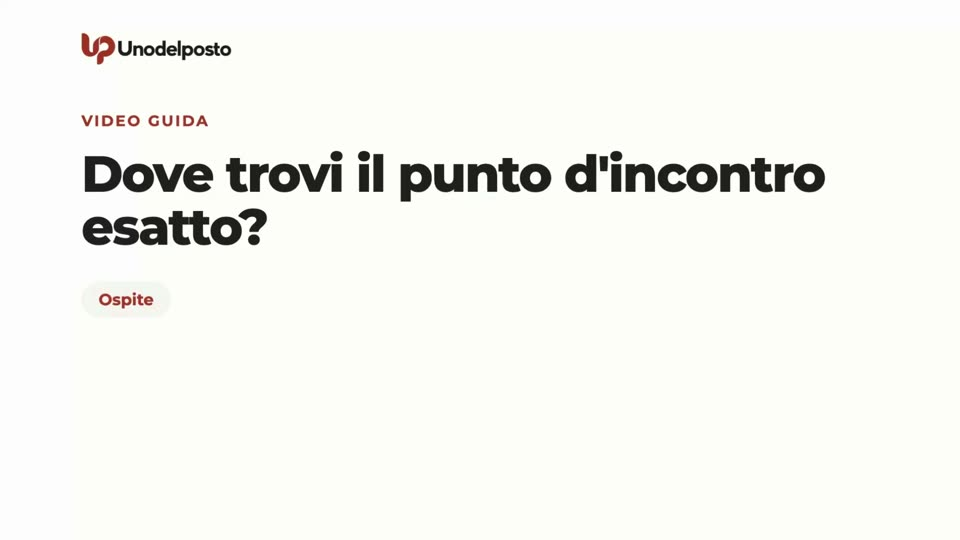
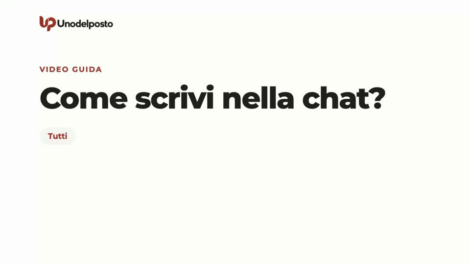
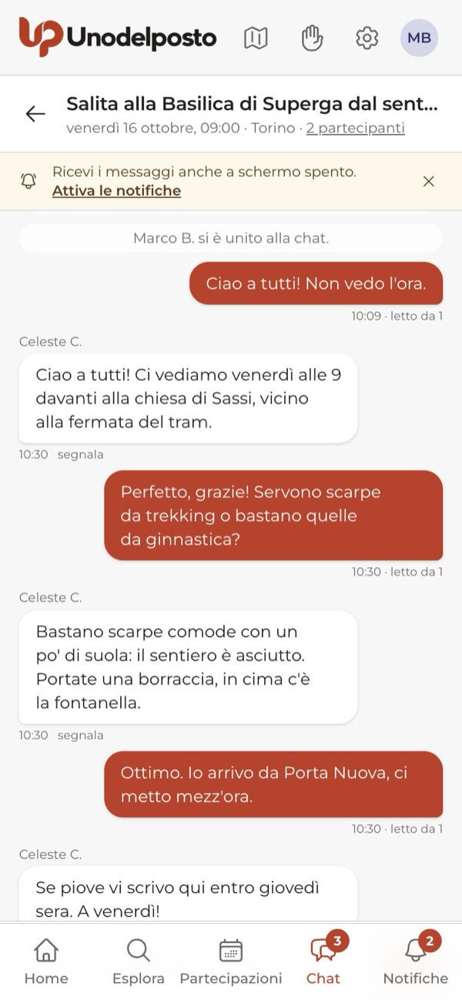
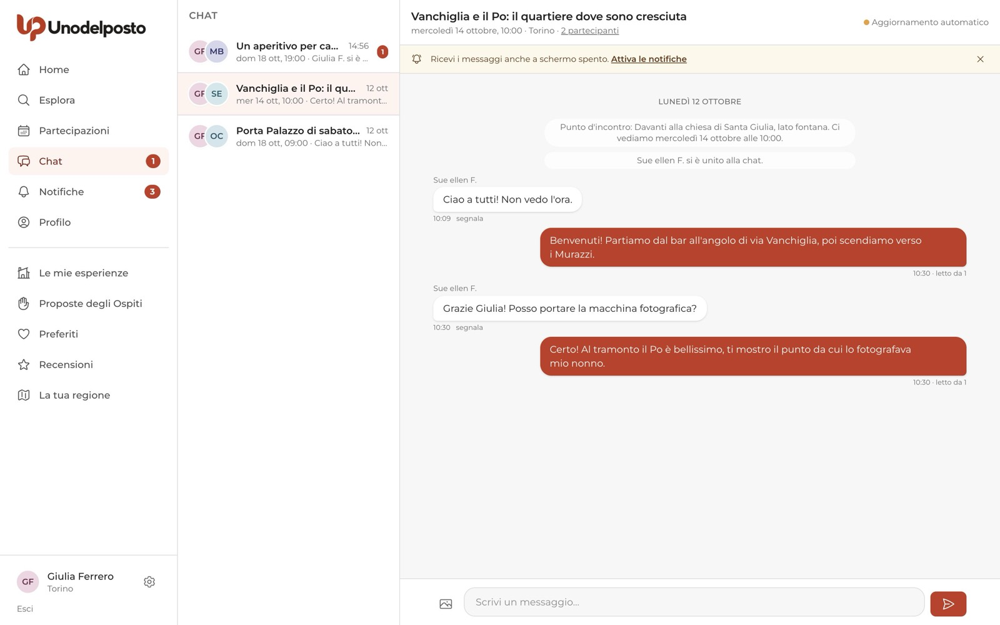
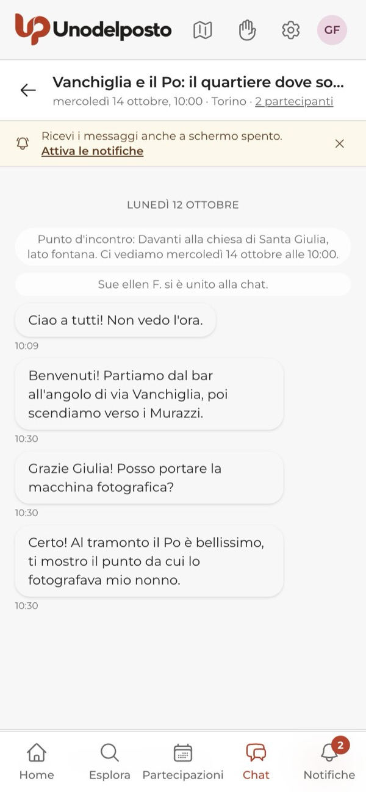
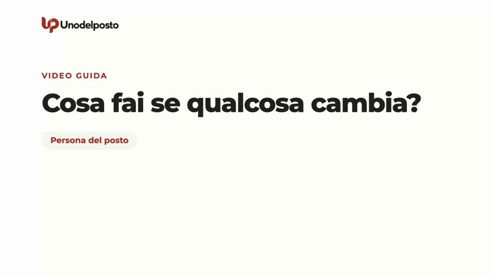
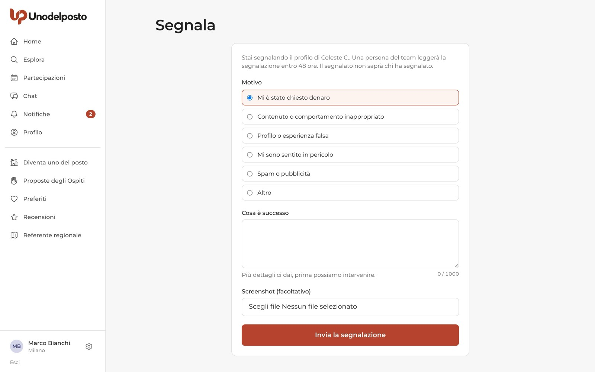
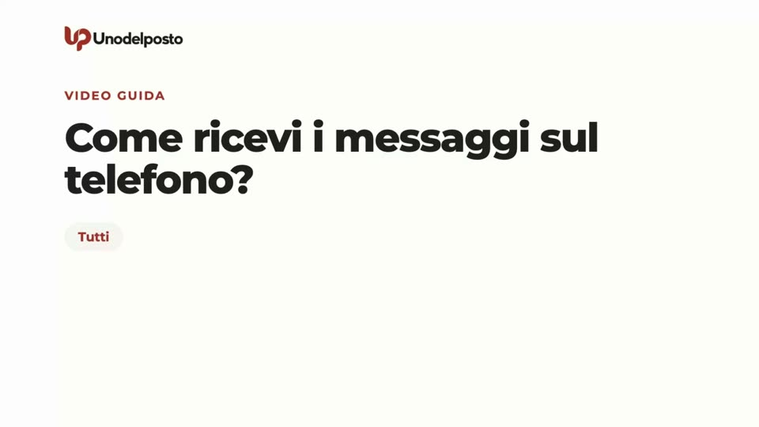

Per ogni esperienza esiste una sola chat di gruppo. Dentro ci sono la persona del posto e gli Ospiti approvati: nessun altro. Lì ricevi il punto d'incontro esatto, chiedi cosa portare, avvisi se fai tardi e, dopo l'incontro, ringrazi.
La chat è l'unico canale previsto prima dell'incontro. Non serve scambiarsi numeri di telefono o profili social: tenere tutto qui protegge tutti, ed è l'unico posto dove lo staff di Unodelposto può aiutarti se qualcosa va storto.
Nasce con l'approvazione
Si apre quando la persona del posto approva il primo Ospite. Prima non esiste.
Solo chi partecipa
La persona del posto e gli Ospiti approvati. Niente messaggi privati a una persona sola.
Il punto esatto è qui
La pagina pubblica mostra solo la zona. L'indirizzo preciso lo vede solo chi è approvato.
Niente denaro
Nessuna richiesta di soldi, mance o contributi. Chi chiede viene allontanato.
Se partecipi
La chat si apre per te quando la tua candidatura viene approvata.
Quando nasce e dove la trovi

Finché la candidatura è in attesa non c'è nessuna chat. Quando chi ti accoglie la approva, ricevi l'avviso «Candidatura accettata» ed entri subito nel gruppo. Da quel momento la chat la trovi in tre punti:
- la voce Chat del menu, con il numero dei messaggi non letti;
- Partecipazioni: apri la tua partecipazione e premi Apri la chat;
- la Home, nei riquadri «Messaggi» e «Prossimi incontri».

Chi c'è dentro

Nel gruppo ci sono la persona del posto e tutti gli Ospiti approvati per quell'esperienza. In questa fase pilota i gruppi sono piccoli: al massimo 6 Ospiti, accompagnatori compresi. Gli accompagnatori che hai indicato nella candidatura non hanno un account e non entrano in chat. Quando entri, un messaggio dice a tutti che ti sei unito al gruppo e con chi vieni.
In alto, sotto il titolo, trovi data, ora, comune e il link con il numero di partecipanti. Toccalo per aprire il pannello «Partecipanti»: per ognuno vedi il ruolo e un segno di fiducia, se c'è, oltre ai comandi Segnala e Blocca.
Il punto d'incontro esatto

Sulla pagina pubblica dell'esperienza si vede solo la zona, con una mappa approssimata. Il punto preciso arriva in chat appena vieni approvato, come primo messaggio, con il giorno e l'ora. Lo trovi anche nella pagina della tua partecipazione, alla voce «Punto d'incontro esatto». Non condividerlo con chi non partecipa.

I messaggi di sistema
Alcuni messaggi non li scrive nessuno: li manda Unodelposto. Sono piccoli, grigi e centrati. Ti dicono per esempio:
- il punto d'incontro e l'appuntamento;
- chi entra nel gruppo, chi lo lascia e chi non ne fa più parte;
- il promemoria il giorno prima e circa due ore prima dell'incontro, con il punto;
- che l'esperienza è stata annullata, con il motivo;
- che la chat è passata in sola lettura;
- che un messaggio è stato rimosso dalla moderazione.
Scrivere, mandare foto, capire chi ha letto

- Scrivi. Usa il campo «Scrivi un messaggio…» in basso. Il tasto Invio manda il messaggio, Maiuscolo + Invio va a capo. Un messaggio può essere lungo fino a 2.000 caratteri.
- Aggiungi una foto, se serve. Tocca l'icona dell'immagine a sinistra del campo. Si può allegare una foto per messaggio, in JPG, PNG o WebP, fino a 5 MB. Altri tipi di file non si possono mandare.
- Invia. Premi la freccia rossa.
Sotto i tuoi messaggi compare «letto da» con il numero di persone che li hanno visti. In alto a destra, «In tempo reale» o «Aggiornamento automatico» indica come si aggiorna la chat: in tutti e due i casi i nuovi messaggi arrivano da soli.

Non serve scambiarsi il numero
Le Regole della comunità chiedono di tenere tutto in chat fino all'incontro: niente numeri di telefono, profili social o link per spostare la conversazione altrove. Per chi accoglie è più semplice, per te è più sicuro. Se arrivi in ritardo o non trovi il punto, scrivilo qui. Per ricevere i messaggi anche fuori casa, attiva le notifiche sul telefono (vedi più avanti).
Se non puoi più venire: uscire dalla chat
Uscire dalla chat equivale a ritirare la partecipazione. Puoi farlo fino all'inizio dell'incontro.
- Apri il pannello. Tocca il numero di partecipanti sotto il titolo della chat.
- Esci dalla chat. In fondo al pannello premi Esci dalla chat.
- Conferma. Il sito ti chiede conferma, perché l'uscita ritira anche la partecipazione.
In alternativa, apri la tua partecipazione da Partecipazioni e premi Non posso più venire: il risultato è lo stesso. In tutti e due i casi ritiri anche i posti dei tuoi accompagnatori.
Dopo l'uscita chi ti accoglie viene avvisato e il tuo posto torna libero. Nel gruppo compare un messaggio che dice che hai lasciato la chat. La chat resta nel tuo elenco, ma puoi leggere solo i messaggi arrivati prima della tua uscita: non puoi più scrivere né vedere chi entra dopo.
Dopo l'incontro
Finito l'incontro puoi ancora scrivere: un grazie, una foto della giornata. Circa due settimane dopo la chat passa in sola lettura: puoi rileggerla ma non scrivere più. Dopo un periodo più lungo, indicato nell'Informativa privacy, i messaggi vengono cancellati. Per lasciare un giudizio su com'è andata, leggi «Recensioni».
Se accogli
La chat la apri tu, approvando il primo Ospite.
Quando nasce
Quando premi Approva su una candidatura, l'Ospite entra in chat. Alla prima approvazione la chat nasce da sola, con il punto d'incontro esatto che hai scritto nella proposta, il giorno, l'ora e un breve consiglio di sicurezza per tutti. Ogni nuovo Ospite approvato entra nello stesso gruppo.
Trovi la chat nella voce Chat del menu, nella Home e nella pagina di gestione dell'esperienza (da Le mie esperienze), nel riquadro «Chat di gruppo» con il pulsante Apri la chat.


Comunicare cambi e ritardi

Il patto di chi è del posto dice: «Ci sono, oppure avviso». Se fai tardi o devi precisare un dettaglio sul punto d'incontro, scrivilo in chat il prima possibile, così lo leggono tutti insieme.
Quando ci sono Ospiti approvati, la data e il luogo non si possono più modificare dalla scheda dell'esperienza. Per cambiamenti grandi, come un altro giorno, la strada è annullare e riproporre l'incontro.
Annullare l'incontro
- Apri la gestione. Vai in Le mie esperienze e apri l'esperienza.
- Annulla esperienza. Premi il pulsante e scrivi il motivo, di almeno 20 caratteri. Il motivo lo vedono i partecipanti.
- Conferma. Premi Sì, annulla.
Tutti gli Ospiti approvati ricevono un avviso. In chat arriva un messaggio con il motivo e la chat passa in sola lettura. Se vuoi riproporre l'incontro in un altro giorno, con Duplica prepari una copia da completare: come ogni proposta, passa di nuovo dal controllo dello staff.
In caso di maltempo
Unodelposto non controlla il meteo: decidi tu. Se l'incontro si fa all'aperto, scrivi in chat per tempo entro quando deciderai, per esempio «Se piove vi scrivo qui entro venerdì sera». Poi mantieni la promessa: confermi che si fa oppure annulli con il motivo. Non lasciare il gruppo senza notizie.
Togliere qualcuno dal gruppo
Se un Ospite approvato non può più partecipare, dalla pagina di gestione premi Rimuovi accanto al suo nome e scrivi il motivo, che gli viene comunicato. Esce dalla chat e nel gruppo compare un messaggio. Chi accoglie non può uscire dalla chat della propria esperienza: resta nel gruppo fino alla fine.
Sicurezza e notifiche
Regole e strumenti che valgono per chi partecipa e per chi accoglie.
Segnalare un messaggio o una persona
Sotto ogni messaggio scritto da altri c'è il link segnala. Per segnalare una persona, apri il pannello dei partecipanti e premi Segnala accanto al suo nome.
- Scegli il motivo. Per esempio «Mi è stato chiesto denaro», «Mi sono sentito in pericolo» o «Contenuto o comportamento inappropriato».
- Racconta cosa è successo. Più dettagli dai, prima lo staff può intervenire. Puoi allegare uno screenshot.
- Invia la segnalazione. Una persona dello staff la legge entro 48 ore. Chi è stato segnalato non sa chi ha segnalato.

Dal pannello puoi anche premere Blocca accanto a una persona. Da quel momento i suoi messaggi spariscono dalla tua chat e i tuoi dalla sua. Lo sblocco si fa da Impostazioni → Utenti bloccati.
Cosa non scrivere
- Niente richieste di denaro: pagamenti, mance, «contributi spese», offerte libere. Un controllo automatico riconosce i messaggi che parlano di soldi e li fa arrivare allo staff, che li legge.
- Niente numeri di telefono, profili social o link per spostare la conversazione altrove.
- Niente foto di altre persone senza chiedere, e niente indirizzo del punto d'incontro fuori dal gruppo.
Se qualcuno ti chiede soldi, non rispondere: segnala il messaggio con il motivo «Mi è stato chiesto denaro».
Le notifiche dei nuovi messaggi

Mentre sei sul sito, il numero accanto a Chat ti dice quanti messaggi non hai letto. Quando non ci sei, i messaggi possono raggiungerti in due modi:
- Sul telefono, se hai attivato le notifiche: un avviso al massimo ogni minuto per ogni chat. Questi avvisi non finiscono nella campanella. Su iPhone servono l'app sulla schermata Home e le notifiche attive.
- Per email, con un riepilogo dei messaggi che restano non letti per più di 15 minuti.
Se in cima alla chat vedi «Ricevi i messaggi anche a schermo spento», premi Attiva le notifiche. Per regolarle, vai in Impostazioni → Notifiche, alla riga «Nuovi messaggi in chat (riepilogo via email, avviso sul telefono)». Come si installa l'app è spiegato in «Primi passi».
Domande frequenti
Posso scrivere in privato a una sola persona?
No. Non esistono messaggi privati: tutto passa dal gruppo. Così chi accoglie non riceve richieste private e nessuno resta da solo con una persona sconosciuta.
Chi viene con me può leggere la chat?
No. Gli accompagnatori non hanno un account e non entrano in chat. Sei tu a girare loro le informazioni, come il punto d'incontro.
Perché non posso più scrivere?
Succede dopo che hai lasciato il gruppo o chi ti accoglie ti ha tolto dai partecipanti, se l'esperienza è stata annullata, oppure se la chat è passata in sola lettura dopo l'incontro. In fondo alla chat un avviso ti dice qual è il caso.
Ho scritto un messaggio con la parola «euro». Succede qualcosa?
Il messaggio arriva normalmente al gruppo. Il controllo automatico lo fa vedere allo staff, che capisce se è una frase innocua, come il prezzo di un caffè che ognuno paga per sé, o una vera richiesta di denaro.
Se esco dalla chat, posso rientrare?
Non c'è un tasto per tornare indietro: uscire dalla chat ritira la partecipazione e il tuo posto torna libero. Per questo il sito ti chiede conferma prima.
Ti serve su carta?
La stessa guida in PDF, da stampare o inviare.